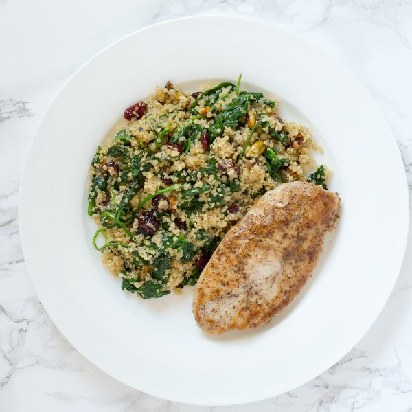

Pan-Seared Chicken with Cranberry & Pistachio Quinoa Salad

Nutrition (per serving)
562.1 kcalCalories
51.1 gProtein
41.6 gCarbs
21.7 gFat
Full nutrition table
| Calories | 562.1 kcal |
| Total fat | 21.7 g |
| Saturated fat | 3.3 g |
| Trans fat | 0.1 g |
| Cholesterol | 124.2 mg |
| Sodium | 146.6 mg |
| Carbohydrates | 41.6 g |
| Fiber | 5.9 g |
| Sugars | 9 g |
| Protein | 51.1 g |
| Potassium | 1122 mg |
| Calcium | 91.1 mg |
| Iron | 4.6 mg |
| Vitamin A | 94 IU |
| Vitamin C | 10.9 mg |
| Vitamin D | 1.7 IU |
Cookware
Ingredients
- 1 (5 oz) pkgbaby spinach
- 1 ½ lbchicken breasts, boneless skinless
- 16 fl ozchicken or vegetable broth
- ¼ cupdried cranberries
- 2 clovesgarlic
- ½ cuppistachios, unsalted
- 1 cupquinoa
- black pepper
- extra virgin olive oil
- salt
Steps
- In a small saucepan, combine the quinoa and broth; bring to a boil over high heat.1 cup quinoa
16 fl oz (2 cups) chicken or vegetable broth - Roughly chop the pistachios and transfer to a small bowl.½ cup pistachios, unsalted
- Trim off and discard the root ends of the garlic; peel and mince or press the garlic. Transfer to a small bowl.2 cloves garlic
- Once the liquid comes to a boil, stir the mixture, cover the saucepan, and reduce the heat to low. Cook the quinoa for 15 minutes. Once done, remove the quinoa from the heat and let it stand, still covered, for 5 minutes.
- Preheat a skillet over medium heat.
- Pat the chicken dry with paper towels and place on a cutting board. Holding a knife parallel to the cutting board, cut the chicken in half horizontally to form thin cutlets. Season the cutlets with salt and pepper on both sides.1 ½ lb chicken breasts, boneless skinless
1 tsp salt
½ tsp black pepper - Add the pistachios to the skillet; cook, stirring frequently, until the nuts are toasted and fragrant, 3 to 5 minutes. Return to the small bowl and wipe out the pan.
- Once the pistachios have been transferred, add olive oil and swirl to coat the bottom.1 tbsp extra virgin olive oil
- Place the chicken cutlets in the skillet; cook until they are golden brown on the outside and cooked through in the center, 2 to 4 minutes per side. Once done, transfer to a plate and cover with foil to keep warm. Cook in batches if necessary.
- Uncover the quinoa and fluff with a fork.
- Once the chicken has been transferred, add olive oil to the skillet followed by the garlic, spinach, cooked quinoa, pistachios, and cranberries. Season with salt and pepper and cook for 1 to 2 minutes. Remove from the heat.1 tbsp extra virgin olive oil
1 (5 oz) pkg baby spinach
¼ cup dried cranberries
½ tsp salt
¼ tsp black pepper - To serve, divide the quinoa salad and chicken between plates. Enjoy!